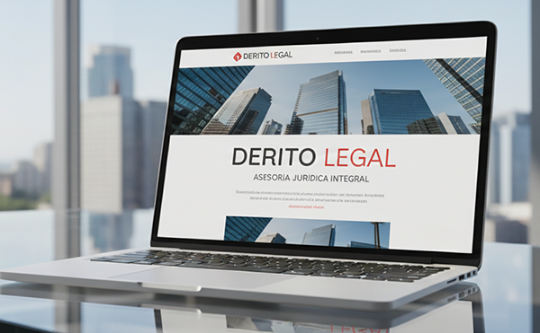
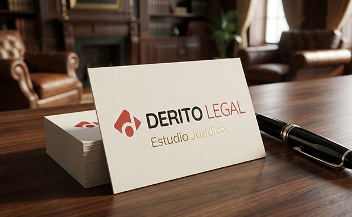
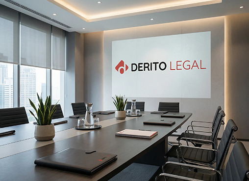
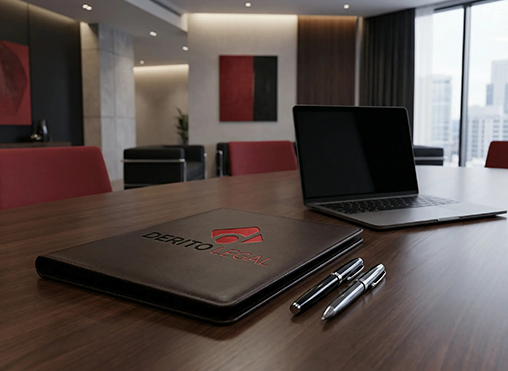
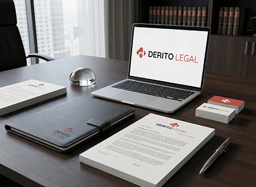

← Volver al portfolio
Branding · Web Experience
Derito Legal · Estudio jurídico
Identidad y experiencia web para un estudio jurídico contemporáneo.
- Cliente
- Derito Legal
- Sector
- Estudio jurídico
- Servicios
- Branding, UI/UX, Web
- Año
- 2023

El desafío
El estudio no tenía una identidad visual clara y necesitaba transmitir confiabilidad y modernidad para captar nuevos clientes.
La solución
Diseñamos un sistema de marca minimalista, una experiencia web con microinteracciones y una narrativa enfocada en beneficios de negocio.
Resultados
- +120% conversión en landing
- Reducción de 45% en bounce rate
- Sistema visual unificado
- Cierre con clientes Serie A





¿Tu presencia digital transmite el nivel de tu trabajo?
Contanos tu proyecto